Toolkit Panel
Everything lives in the Toolkit tab of the 3D Viewport sidebar (N).
Toolkit Panel
All tools in one sidebar tab.

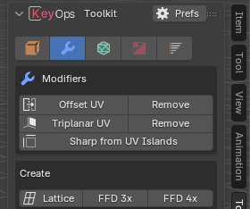
More info
N › Toolkit
Shift-click icons to show several sections. Prefs opens the add-on preferences.
The Modifiers section has Fast Bevel, Array and Solidify (Ctrl-click adds a new modifier, needs the Add Modifier Pie preference), Lattice / FFD, and Offset / Triplanar UV.
Toggle in preferences: Object Toolkit
Object Toolkit
Everyday object operations.
More info
Object Mode
| Button | What it does | Key |
|---|---|---|
| Combine / Separate | Join keeping normals and UVs / split by loose parts or material | |
| Apply Modifiers | Apply heavy stacks fast; collection instances are made real first. Keep a backup. | Alt C |
| Freeze Scale | Apply scale and adjust modifiers to match. Applies every object it can and reports the rest; objects sharing a mesh with the same scale keep sharing it | |
| Snap to Floor | Snap to Floor | Alt 3 |
| Fast Mirror | Fast Mirror | Alt X |
| Parent Used Objects | Parent boolean cutters and other modifier objects to the selection. Make Unique copies a cutter that other objects use too, so parenting never moves them | |
| Re-Align Rotation | An object whose rotation was applied gets a rotation matching its shape again (tightest box and largest flat area, or the selected faces); the mesh doesn't move | |
| Duplicate Linked | Linked mesh, or shared modifier stack | Shift Alt D |
| Boolean | Booleans | Ctrl Numpad |
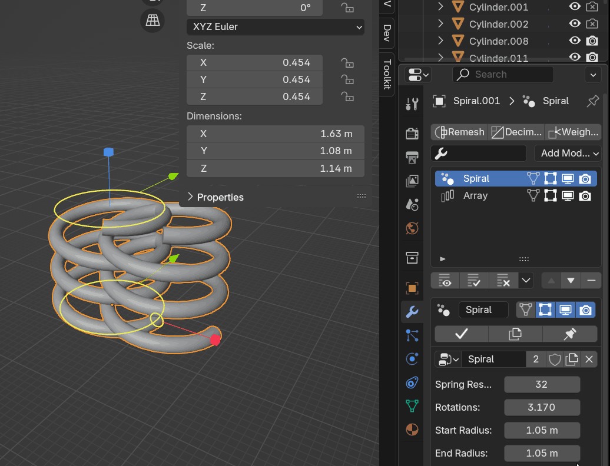
Edit Toolkit
Edit tools that follow the selection mode.
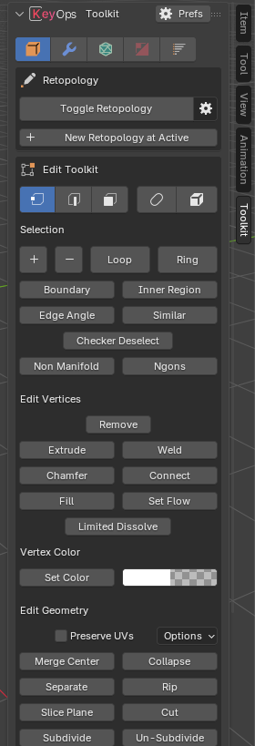
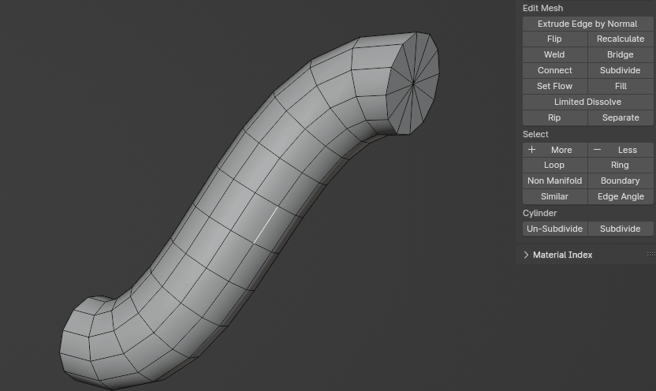
More info
Edit Mode
- Element (whole parts) is a fourth select mode, joined with Vertex, Edge and Face in the 3D View header. The filter icon shows only Key Ops tools.
- Rings & Sides: Change Number of Sides rebuilds a cylinder, tube, pipe, torus or other round shape with more or fewer sides and keeps its outline: select one edge loop around it (or its faces), then Wheel changes the sides, Ctrl Wheel doubles or halves them, click to confirm. Ends can be open, an n-gon cap or a triangle fan; UVs, materials and seams are kept. Where the shape meets geometry it can't walk through, that ring keeps its vertices and a strip of quads and triangles joins it to the rebuilt rings. Fast scrolling on heavy meshes rebuilds once per pause. Halve Sides and Double Sides remove or add every other loop along a cylinder (select one edge along its length; keeps UVs). Revolve Edges (Screw Modifier) keeps only the selected edges and spins them into a round shape with a Screw modifier around the axis the profile runs along (change it in Adjust Last Operation). Re-Bevel changes (or, at 0 segments, removes) a bevel already in the mesh.
- Slide Scale, Make Edge Trim (Live Edge Trim is in the Modifiers panel).
- Lattice in Edit Mode: Minimum Box fits it tightly to the selected vertices, turned to match them.
- Triplanar UV (modifier panel): every side upright and never mirrored, Texture Size in metres, World Scale on by default; per-axis scale and rotation in the modifier's closed panels.
- UV: Preserve UVs on the header keeps UVs in place while moving geometry and turns on Keep Connected. Then the UV Unwrap menu, Mark Seam, Clear Seam and Seam by Angle, which marks seams and sharp edges above an angle (with UV Tools on, see UV Tools).
- Set Flow: built in.
- Make Planar / Circle / Relax appear with LoopTools on 5.0+.
- The Extrude menu gets Offset Extrude Edge.
- Thin Triangles: selects every triangle with a corner under a max angle (see Select Similar).
- Include Blender Operators (filter icon in the panel, or preferences): on by default for a 3ds Max-style all-in-one panel. Turn the filter on to show only Key Ops tools.
CAD Decimate
Decimate huge scenes without crashing.
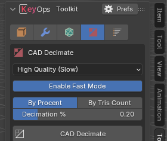
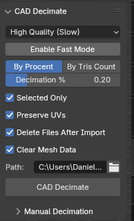
More info
Toolkit › CAD Decimate
- High: Decimate modifier, best result, by % or target tris.
- Medium - Weld + Decimate: an automatic, detail-safe Weld (Connected) does the cheap part, Decimate the final step. For extremely dense meshes. No UVs.
- Low / Lowest: weld only, fastest, no UVs.
- Fast Mode: faster but uses more memory.
Works best with many separate objects.
Toggle in preferences: CAD Decimate
Auto LOD
LODs in one click.
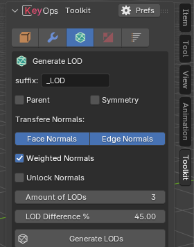
More info
Toolkit › LOD
Amount, % reduction per LOD, suffix, parenting, X symmetry, normal transfer and weighted normals.
Toggle in preferences: Auto LOD
Polycount List
Live triangle count per object.
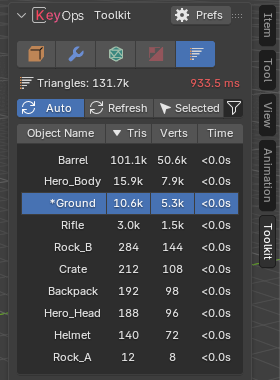
More info
Toolkit › Polycount
Also in Scene Properties. Turn off Auto Update for very large scenes.
Selecting works like the Outliner: click to select, Ctrl-click to toggle, Shift-click to select the range from the active object, and Shift-click the active object to select its children. While hovering the list, ↑/↓ or W/S walk through it; hold Shift to extend the selection.
Search the list by name. Hidden objects and objects that can't be selected are listed greyed out; a hidden object has an eye button to show it again, and H over the list hides or shows the selected ones (Alt H shows all). A / Alt A select and deselect everything in the list; right-click a row for more.
Toggle in preferences: Polycount List
Quick Bake Name
Name high / low pairs for baking.
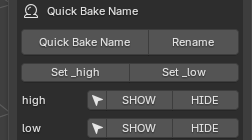
More info
Toolkit › Object
Two objects: the denser one gets _high, the other _low. More objects: the active one is _low. Each group gets select, show and hide buttons.
Toggle in preferences: Quick Bake Name
Quick Export
Ctrl EExport the selection in one key.
More info
If the active collection is named high or low, it goes into a Bake folder as _high / _low. OBJ by default. Save the .blend first.
Toggle in preferences: Quick Export
Material Utils
Alt MQuick material list.
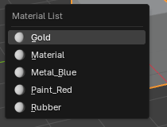
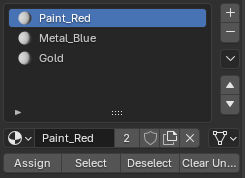
More info
Also adds Remove All Object Materials to Object › Clean Up. Compact list or big preview icons in the settings.
Toggle in preferences: Material Utils